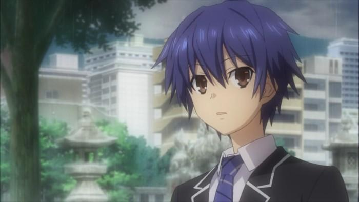

Shido is the main character in Date A Live, he possesses a strange power that allows him to seal the powers of a Spirit in his body with a kiss.
Since he has this type of power, whenever a Spirit appears, he has to do everything (with assistance by Kotori and sometimes the other Spirits) to save and support her, so that she'll be able to build better relationship with him. And among all the options, the safest and most convenient way for him is to date with her.
For more informations, please visit here
